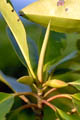

Diagnostic characters
Botany & morphology
Regeneration
Reproductive biology
Ecology
Distribution
Null
Medium to tall buttressed tree with triangular shaped crown. Pneumatophores knee like; bark grey or pale brown. Flowers large; the calyx ribbed, yellowish. Hypocotyle small.
Leaves simple opposite, elliptic-oblong, or oblanceolate, acute at apex, cuneate or rarely obtuse at base 9 – 15 x 3 – 6 cm; petiole 2 – 3 cm long.
Flowers solitary, regular, bisexual, 3 - 4 cm long; calyx 10 – 12 lobed, yellowish; petals 10-12, 1.5-2cm long, bilobed and ciliated the apex.
Hypocotyle 7 – 13 cm long, 1.5 – 2 cm thick, shortly cigar-shaped.
The bark smooth, dark grey or dark reddish brown with pale pinkish lenticels.
Fruit remains attached to the seedling and dispersed with it. Germination modified epigeal, vivipary.
Pollination by butterflies and insects; pollen release by explosive mechanism, which is triggered by visiting pollinator.
Frequent along the outer fringes of tidal forests inundated more with fresh water ; sporadic on newly formed mudflats and along channels in the interior of mangrove areas. It is associated with Nypa fruticans or Rhizophora apiculata and Bruguiera gymnorrhiza.
Tropical Africa and Asia, Australia and the Pacific. In India it occurs both the coasts and in the Andaman and Nicobar Islands. In Sri Lanka. along the West coast.
Top of the page